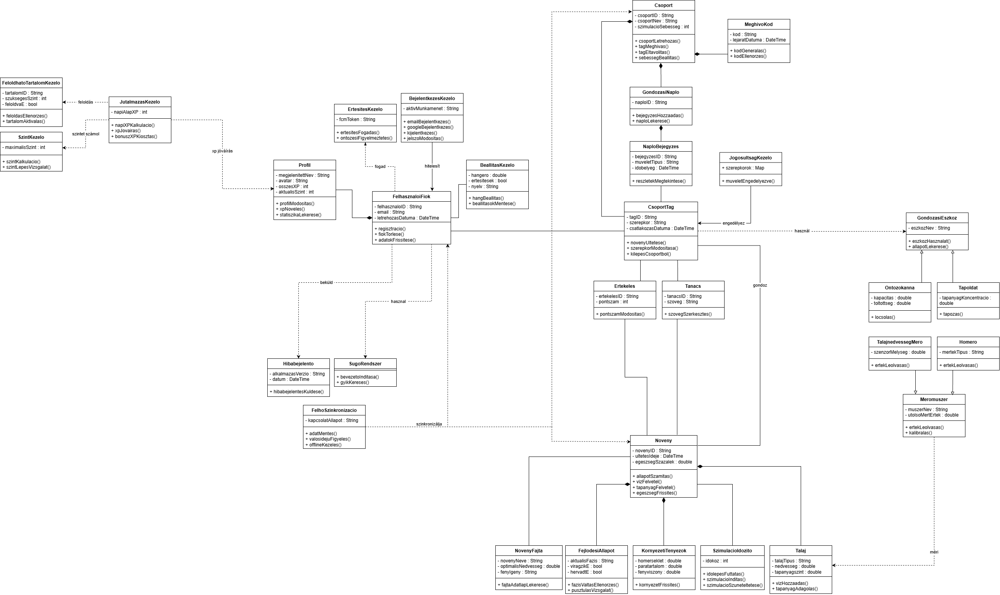
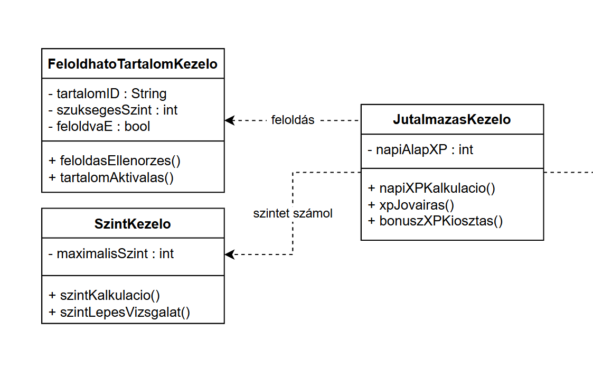
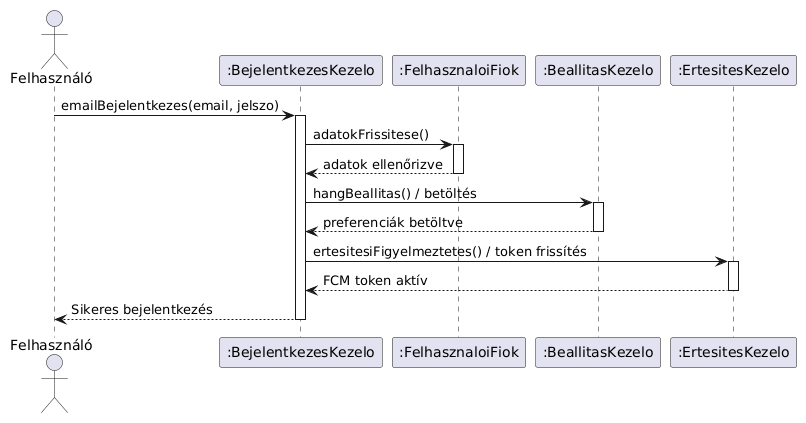
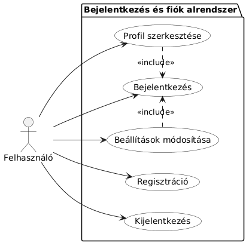
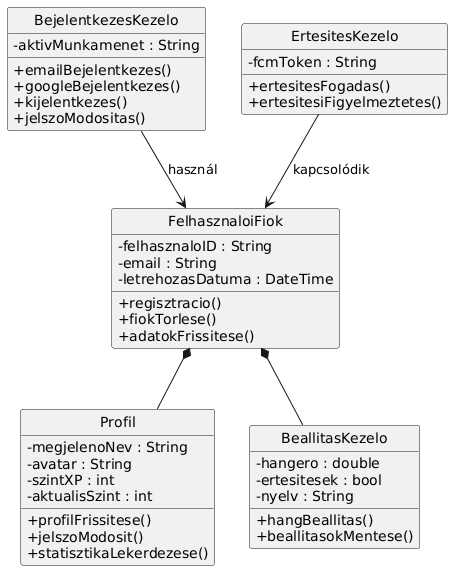

| Dátum | Verzió | Leírás | Szerző |
|---|---|---|---|
| 2026. 11. 13. | 0.1 | Kezdetleges verzió | Suba Kinga, Zsólyomi Klaudia Vanda, Baranyovszki Kata, Zsák István, Mata Márk |
1. Bevezetés
A virtuális növénygondozó alkalmazás célja egy olyan modern, cross-platform program létrehozása, ami interaktív és biztonságos módon segíti a diákok fejlődését. A fejlesztés a Flutter keretrendszerre és a Dart programozási nyelvre épül, a felhős háttérszolgáltatásokat pedig a Google Firebase biztosítja.
A legfőbb célkitűzés, hogy a 8-16 éves korosztálynak és a tanároknak egy költséghatékony és kockázatmentes alternatíva álljon rendelkezésre a valós növénynevelés helyett. A diákok virtuális csoportokban nevelhetik a digitális növényeiket, amelyek fejlődését egy szimulációs motor számítja ki a környezeti tényezők és a gondozás alapján. A tartós motivációt az alkalmazásba épített játékos elemek (például tapasztalati pontok és trófeák) biztosítják. A rendszerben a pedagógusok könnyen ellenőrizhetik a diákok munkáját, a szimuláció felgyorsításával pedig a hetekig tartó folyamatokat is egyszerűbben le tudják vezetni.
Jelen dokumentum az alkalmazás analízis modelljét mutatja be, amely átmenetet képez a specifikációban leírt követelmények és a tényleges szoftverkomponensek között. A dokumentáció célja a működés logikus alrendszerekre bontása a konkrét kódolási és implementációs részletek mellőzésével. Az anyag első felében a teljes rendszer kezdeti osztálydiagramja és a főbb alrendszerek kerülnek bemutatásra. Ezt követően az első, „Bejelentkezés és fiók” alrendszer részletes, UML diagramokkal támogatott statikus, dinamikus és funkcionális modellje olvasható.
2. Kezdeti Osztálydiagram
2.1 Osztálydiagram

2.2. Osztályok felsorolása
FelhasznaloiFiok
A felhasználó alapvető regisztrációs és fiókadatait tárolja, valamint azonosítja a felhasználót a rendszerben.
Profil
A felhasználó mindenki számára látható adatait tárolja.
ErtesitesKezelo
A push értesítések fogadását és küldését felügyeli a telefon és az FCM (Firebase Cloud Messaging) token segítségével.
BejelentkezesKezelo
A felhasználó hitelesítését, belépését, kijelentkezését és a munkamenet érvényesítését kezeli.
BeallitasKezelo
A felhasználóhoz tartozó egyedi alkalmazásbeállításokat kezeli és tárolja a fiókhoz kapcsolva.
JutalmazasKezelo
Kiszámítja a megszolgált tapasztali pontokat és egyéb bónuszokat.
FeloldhatoTartalomKezelo
Nyilvántartja a szintekhez kötött növényfajtákat, dekorációkat és felügyeli azok aktiválásat és elérhetőségét.
SzintKezelo
Kiszámítja a felhasználó szintjét, és a szintlépés feltételeinek teljesülését vizsgálja.
CsoportTag
Egy felhasználó adott csoporton belüli tagságát és szerepkörét tárolja.
NaploBejegyzes
Egy elvégzett gondozási esemény konkrét adatait rögzíti.
GondozasiNaplo
A csoporton belül végrehajtott összes naplóbejegyzés időrendi gyűjtőhelye.
Csoport
A diákok és pedagógusok által alkotott csoport adatait, valamint a csoporthoz tartozó szimulációs sebességet tárolja.
MeghivoKod
A csoporthoz történő gyors csatlakozáshoz szükséges véletlenszerűen generált egyedi kódot hozza létre, valamint érvényesíti azt.
Ertekeles
Lehetővé teszi, hogy a csoporttagok és a tanárok értékeljék egymás növényeit.
Tanacs
A csoporttagok közti szöveges segítségnyújtást teszi lehetővé.
Noveny
A nevelt növény. Gondozási műveletek és környezeti hatások alapján számítja ki a jelenlegi állapotát.
NovenyFajta
Közös katalógus, amely az adott növényfaj igényeit, ideális környezeti feltételeit tárolja.
FejlodesiAllapot
A növény pillanatnyi állapotát tárolja.
KornyezetiTenyezok
A növény körüli környezet fizikai jellemzőit tárolja, valamint frissíti.
SzimulacioIdozito
A növény belső szimulációs órája. Az állapotfrissítéseket ütemezi.
Talaj
A növény alatti talaj típusát, nedvességtartalmát és tápanyagszintjét tárolja és frissíti.
GondozasiEszkoz
Egységes felületet és közös műveleteket definiálja a többi gondozási eszközzel.
Absztakt osztály.
Ontozokanna
A talaj víztartalmának növelésére szolgáló eskzöz.
Tapoldat
A talaj tápanyagtartalmának növelésére szolgáló valami.
Meromuszer
Egységes felületet és közös műveleteket definiálja a többi mérési eszközzel.
Absztakt osztály.
TalajnedvessegMero
A talaj nedvességtartalmát leolvasó mérőműszer.
Homero
A könyezet jelenlegi léghőmérsékletét leolvasó mérőműszer.
Hibabejelento
Lehető teszi a technikai problémák jelentését a fejlesztők felé.
SugoRendszer
Az új felhasználókat segítő interaktív tutorial és a beépített, kereshető súgót biztosítja.
FelhoSzinkronizacio
A helyi adatok és a Firestore közti kétirányú adatszinkronizációért felelős osztály.
2.3. Alrendszerek
2.3.1. Bejelentkezés és fiók

Ez az elrendszer felelős a felhasználók azonosításáért, a munkamenet érvényesítéséért, a nyilvános profil adatainak kezeléséért, a személyes eszközbeállításokért és a push értesítések fogadásáért. Ez az alrendszer a belépési kapu az alkalmazásba
Az alrendszerhez tartozó osztályok:
- FelhasznaloiFiok
- Profil
- ErtesitesKezelo
- BejelentkezesKezelo
- BeallitasKezelo
2.3.2. Csoport és multiplayer

A közösségi együttműködéshez szükséges dolgokat összefogó alrendszer. Összefogja a csoportokat, a csatlakozási lehetőségeket, a tevékenységet rögzítő naplót, valamint a csoporttagok közötti interaktív lehetőségeket.
Az alrendszerhez tartozó osztályok:
- Csoport
- CsoportTag
- MeghivoKod
- GondozasiNaplo
- NaploBejegyzes
- Ertekeles
- Tanacs
2.3.3. Szimuláció

A szimulációs alrendszer összefoglal mindent, ami a virutális növény életéhez köthető. Kezeli a növény élettani folyamatait, a szimulált környezetét, és modellezi az időzített lépéseket.
Az alrendszerhez tartozó osztályok:
- Noveny
- NovenyFajta
- FejlodesiAllapot
- KornyezetiTenyezok
- Talaj
- SzimulacioIdozito
2.3.4 Gondozás

A gondozás alrendszer a felhasználói beavatkozásra és vizsgálatra szolgáló különféle eszközöket tartalmazza.
Az alrendszerhez tartozó osztályok:
- GondozasiEszkoz
- Ontozokanna
- Tapoldat
- Meromuszer
- TalajnedvessegMero
- Homero
2.3.5 Jutalmazás

A jutalmazás alrendszer a diákok tartós elköteleződését és felelősségvállalását támogató játékos modul. Kezeli a helyes gondozásért járó napi tapasztalati pontokat, a szintlépést és a fokozatosan megnyíló feloldható dolgokat.
Az alrendszerhez tartozó osztályok:
- JutalmazasKezelo
- SzintKezelo
- FeloldhatoTartalomKezelo
2.3.6. Adatkezelés és támogatás

Az adatkezelés és támogatás alrendszer a rendszer megfelelő működését segítő modul. A valós idejű szinkronizációért, az internetkapcsolat nélküli offline működésért, az interaktív bevezetőért és a hibabejelentések kezelése is a feladata.
Az alrendszerhez tartozó osztályok:
- FelhoSzinkronizacio
- SugoRendszer
- Hibabejelento
2.3.7. Az alrendszerek együttműküdése
| Forrás | Cél | Leírás |
|---|---|---|
| Bejelentkezés és fiók | Csoport és multiplayer | A felhasználói fiók azonosítja a csoporttagságot |
| Csoport és multiplayer | Szimuláció | A csoporttag elülteti és gondozza a növényt, a többiek értékelést és tanácsot küldhetnek |
| Csoport és multiplayer | Gondozás | A csoporttag kiválasztja és használja az eszközöket |
| Gondozás | Szimuláció | Az eszközök vizet és tápanyagot juttatnak a talajba, a műszerek mérik a növény környezetét |
| Jutalmazás | Bejelentkezés és fiók | A sikeres gondozásért, és a szintlépésért járó jutalmakat jóváírja a felhasználó profiljában |
| Adatkezelés és támogatás | Bejelentkezés és fiók Csoport és multiplayer Szimuláció |
A FelhoSzinkronizacio valós időben szinkronizálja a felhasználó, a csoport és a növény állapotát |
| Adatkezelés és támogatás | Bejelentkezés és fiók | A bejelentkezett felhasználói fiók számára nyújt támogatást |
3. Az első alrendszer modellje: Bejelentkezés és fiók
Ez a fejezet a Bejelentkezés és fiók alrendszert mutatja be részletesen, mivel ez az alkalmazás belépési pontja. Enélkül a többi funkció (például a csoportok vagy a növénygondozás) nem lenne elérhető a felhasználók számára.
3.1 Statikus modell
A statikus modell kialakítása az alrendszerhez tartozó entitások és a köztük lévő logikai viszonyok feltérképezésén alapul.
3.1.1 Kapcsolatok pontosítása
A tervezés során a FelhasznaloiFiok osztály funkcionál központi elemként. A Profil és a BeallitasKezelo osztályok kompozíciós kapcsolatban állnak a fiókkal, hiszen ezek szorosan hozzá tartoznak: ha a fiók törlődik, a profil és a beállítások is megsemmisülnek. A BejelentkezesKezelo és az ErtesitesKezelo osztályok viszont csak használják a fiók adatait a feladataik elvégzéséhez, így köztük egyszerű asszociációs kapcsolat áll fenn.
A csoportos résznél a FelhasznaloiFiok a CsoportTag osztályon keresztül kapcsolódik a Csoport-hoz. A Csoport és a CsoportTag között aggregációs kapcsolat van, a belépéshez kellő MeghivoKod pedig kompozícióval tartozik a csoporthoz, mert a csoport nélkül nincs értelme. A növénynevelésnél a CsoportTag asszociációval kapcsolódik a saját Noveny osztályához, ami pedig a NovenyFajta adatait használja ahhoz, hogy tudja, milyen igényei vannak.
3.1.2 Attribútumok azonosítása
A kapcsolatok tisztázása után az egyes osztályok által tárolt adatok kerültek meghatározásra. A hitelesítéshez a fióknál a felhasznaloID, az email és a letrehozasDatuma szükséges. A profil a megjelenoNev és az avatar mellett a szintXP-t és az aktualisSzint-et is tárolja. Az értesítéskezelő a működéshez az fcmToken-t, a beállítások osztály pedig a hangero, az ertesitesek (bool) és a nyelv preferenciáit tartalmazza. A bejelentkezéskezelő az aktivMunkamenet változót tartja nyilván.
A csoportoknál a Csoport tárolja a csoportID-t, a nev-et, a szimulaciosSebesseg-et és a letrehozasDatuma-t. A CsoportTag-hoz a tagID, a felhasznaloID, a szerepkor és a csatlakozasDatuma tartozik, a MeghivoKod-nál pedig a kod, a csoportID, a lejaratIdeje és az aktiv (bool) adatok kellenek. A Noveny a novenyID, a becenev, az ultetesDatuma és az eletbenVan értékeket tárolja, a NovenyFajta pedig a fajtaID, a fajtaNev, az idealisNedvesseg, az idealisHomerseklet és a szuksegesSzint adatokat.
3.1.3 Bázisosztályok keresése
A tervezés része annak vizsgálata is, hogy a közös tulajdonságok összevonhatók-e egy ősosztályba (bázisosztályba). Mivel ebben a konkrét alrendszerben az osztályok (fiók, profil, kezelők) teljesen eltérő feladatokat látnak el és más adatokat tárolnak, nem indokolt közös bázisosztály létrehozása (ellentétben például a Gondozás alrendszerrel, ahol a különböző eszközöknek van egy közös ősosztálya).
3.2 Dinamikus modell
A dinamikus modellt egy szekvenciadiagram ábrázolja, ami egy sikeres bejelentkezés folyamatát mutatja be időrendben. Amikor a felhasználó megadja az adatait, a BejelentkezesKezelo ellenőrzi azokat a FelhasznaloiFiok entitásban. Ha az adatok megfelelőek, a rendszer betölti a felhasználó korábbi beállításait, és frissíti a telefonos értesítésekhez szükséges tokent az ErtesitesKezelo segítségével.

3.3 Funkcionális modell
A funkcionális modell (használati eset diagram) azokat a műveleteket foglalja össze, amelyeket a felhasználó ebből az alrendszerből el tud indítani. Ilyen az alapvető regisztráció, a bejelentkezés és a kijelentkezés. A profil és a beállítások módosítását egy <<include>> nyíl köti a bejelentkezéshez, ami azt jelzi, hogy ezeknek a funkcióknak feltétele a sikeres belépés.

3.4 Operációk azonosítása
A dinamikus és funkcionális modellek alapján meghatározásra kerültek az osztályokhoz tartozó függvények (operációk). A bejelentkezési folyamatból adódik az email és Google alapú bejelentkezés (emailBejelentkezes(), googleBejelentkezes()). Az értesítésekhez az ertesitesFogadas(), a beállításokhoz pedig a beallitasokMentese() operáció tartozik.
A csoportos résznél a Csoport osztályhoz a tagHozzaadasa() és a sebessegModositasa() függvények kerültek, a MeghivoKod-hoz a kodGeneralasa() és a kodErvenyesitese(), a CsoportTag-hoz pedig a novenyGondozasa(). A növényeknél a Noveny az allapotFrissitese() és az egeszsegSzamitasa() műveleteket kapta, a NovenyFajta pedig az igenyekLekerdezese() függvényt.
3.5 Az analízis modell osztálydiagramja
Az előző pontokban azonosított kapcsolatok, attribútumok és operációk alapján összeáll a Bejelentkezés és fiók alrendszer végső osztálydiagramja.

3.6 Az analízis modell osztályainak listája
Az elkészült osztálydiagram alapján az osztályok és azok felelősségeinek, attribútumainak és operációinak részletes bontása az alábbi:
3.6.1 FelhasznaloiFiok
- felelőssége, feladata: A rendszer hitelesítési alapköve; a felhasználó alapvető regisztrációs és belépési adatait tárolja, valamint azonosítja a felhasználót a rendszerben.
- együttműködők: Profil, BeallitasKezelo, BejelentkezesKezelo, ErtesitesKezelo, CsoportTag, FelhoSzinkronizacio
- attribútumok
| Név | Típus | Leírás |
|---|---|---|
| felhasznaloID | String | A felhasználó egyedi azonosítója a Firebase rendszerben. |
| String | A regisztrációhoz és bejelentkezéshez használt e-mail-cím. | |
| letrehozasDatuma | DateTime | A felhasználói fiók létrehozásának pontos időpontja. |
- operációk
| Név | Argumentumok | Működése, feladata |
|---|---|---|
| regisztracio | email: String, jelszo: String | Létrehoz egy új felhasználói fiókot a megadott adatokkal. |
| fiokTorlese | - | Véglegesen törli a fiókot és a hozzá tartozó kompozíciós adatokat. |
| adatokFrissitese | ujEmail: String | Módosítja a felhasználói fiók alapadatait. |
3.6.2 Profil
- felelőssége, feladata: A felhasználó többi csoporttag és a pedagógusok számára nyilvánosan látható adatait, valamint a megszerzett tapasztalati pontokat és szintet tárolja.
- együttműködők: FelhasznaloiFiok, JutalmazasKezelo, SzintKezelo
- attribútumok
| Név | Típus | Leírás |
|---|---|---|
| megjelenoNev | String | A felhasználó által választott, mások számára látható név. |
| avatar | String | A kiválasztott profilkép azonosítója vagy elérési útja. |
| szintXP | int | A felhasználó által eddig összegyűjtött tapasztalati pontok száma. |
| aktualisSzint | int | A felhasználó jelenlegi elért szintje a rendszerben. |
- operációk
| Név | Argumentumok | Működése, feladata |
|---|---|---|
| profilFrissitese | nev: String, avatar: String | Frissíti a felhasználó megjelenő nevét és profilképét. |
| jelszoModosit | regiJelszo: String, ujJelszo: String | Elindítja a fiókhoz tartozó jelszó megváltoztatását. |
| statisztikaLekerdezese | - | Visszaadja a felhasználó aktuális szintjét és XP-adatait. |
3.6.3 BejelentkezesKezelo
- felelőssége, feladata: A felhasználó hitelesítését, beléptetését, kijelentkeztetését és az aktív munkamenet érvényesítését kezeli.
- együttműködők: FelhasznaloiFiok, BeallitasKezelo, ErtesitesKezelo
- attribútumok
| Név | Típus | Leírás |
|---|---|---|
| aktivMunkamenet | String | Az aktuálisan bejelentkezett munkamenet azonosító tokenje. |
- operációk
| Név | Argumentumok | Működése, feladata |
|---|---|---|
| emailBejelentkezes | email: String, jelszo: String | Hitelesíti a felhasználót e-mail-cím és jelszó alapján. |
| googleBejelentkezes | - | Elvégzi a bejelentkezést Google-fiók segítségével. |
| kijelentkezes | - | Lezárja az aktív munkamenetet és kilépteti a felhasználót. |
| jelszoModositas | email: String | Jelszó-visszaállítási vagy módosítási folyamatot indít el. |
3.6.4 BeallitasKezelo
- felelőssége, feladata: A felhasználóhoz tartozó egyedi alkalmazás- és megjelenítési preferenciákat kezeli, menti és tölti be.
- együttműködők: FelhasznaloiFiok, BejelentkezesKezelo, FelhoSzinkronizacio
- attribútumok
| Név | Típus | Leírás |
|---|---|---|
| hangero | double | Az alkalmazás hangeffektjeinek beállított hangereje. |
| ertesitesek | bool | Jelzi, hogy a felhasználó engedélyezte-e a push értesítéseket. |
| nyelv | String | Az alkalmazás felületének kiválasztott nyelve. |
- operációk
| Név | Argumentumok | Működése, feladata |
|---|---|---|
| hangBeallitas | ujHangero: double | Módosítja az alkalmazás aktuális hangerőszintjét. |
| beallitasokMentese | - | Elmenti a módosított beállításokat a felhasználói fiókhoz. |
3.6.5 ErtesitesKezelo
- felelőssége, feladata: A push értesítések fogadását és küldését felügyeli a mobileszköz és a Firebase Cloud Messaging (FCM) token segítségével.
- együttműködők: FelhasznaloiFiok, BejelentkezesKezelo
- attribútumok
| Név | Típus | Leírás |
|---|---|---|
| fcmToken | String | Az eszköz egyedi Firebase Cloud Messaging azonosító tokenje. |
- operációk
| Név | Argumentumok | Működése, feladata |
|---|---|---|
| ertesitesFogadas | uzenet: String | Feldolgozza és megjeleníti a beérkező push értesítést az eszközön. |
| ertesitesiFigyelmeztetes | tipus: String | Emlékeztető figyelmeztetést küld (pl. szükséges öntözés esetén). |
3.6.6 Csoport
- felelőssége, feladata: A diákok és pedagógusok által alkotott virtuális csoport alapadatait, taglistáját, valamint a csoporthoz beállított szimulációs sebességet tárolja és kezeli.
- együttműködők: CsoportTag, MeghivoKod, GondozasiNaplo, SzimulacioIdozito, FelhoSzinkronizacio
- attribútumok
| Név | Típus | Leírás |
|---|---|---|
| csoportID | String | A csoport egyedi azonosítója a Firestore adatbázisban. |
| nev | String | A csoport megjelenítendő neve (pl. osztály neve). |
| szimulaciosSebesseg | double | A pedagógus által beállított időgyorsítási szorzó. |
| letrehozasDatuma | DateTime | A csoport létrehozásának pontos időpontja. |
- operációk
| Név | Argumentumok | Működése, feladata |
|---|---|---|
| tagHozzaadasa | tag: CsoportTag | Új felhasználót vesz fel a csoport tagjai közé. |
| tagEltavolitasa | felhasznaloID: String | Eltávolítja a megadott azonosítójú tagot a csoportból. |
| sebessegModositasa | ujSebesseg: double | Módosítja a csoport növényeire érvényes szimulációs sebességet. |
3.6.7 CsoportTag
- felelőssége, feladata: Összeköti a felhasználói fiókot egy adott csoporttal, valamint tárolja a felhasználó csoporton belüli szerepkörét (diák vagy pedagógus).
- együttműködők: FelhasznaloiFiok, Csoport, Noveny, Ertekeles, Tanacs
- attribútumok
| Név | Típus | Leírás |
|---|---|---|
| tagID | String | A csoporttagság egyedi azonosítója. |
| felhasznaloID | String | A taghoz tartozó FelhasznaloiFiok azonosítója. |
| szerepkor | String | A tag jogosultsági szintje (diák vagy tanár). |
| csatlakozasDatuma | DateTime | A csoporthoz való csatlakozás időpontja. |
- operációk
| Név | Argumentumok | Működése, feladata |
|---|---|---|
| szerepkorModositasa | ujSzerepkor: String | Frissíti a tag csoporton belüli jogosultságát. |
| novenyGondozasa | noveny: Noveny, eszkoz: GondozasiEszkoz | Gondozási műveletet hajt végre egy növényen a kiválasztott eszközzel. |
3.6.8 MeghivoKod
- felelőssége, feladata: Véletlenszerűen generált, egyedi csatlakozási kódot hoz létre egy adott csoporthoz, és ellenőrzi annak érvényességét belépéskor.
- együttműködők: Csoport, CsoportTag
- attribútumok
| Név | Típus | Leírás |
|---|---|---|
| kod | String | A generált, karakterekből álló egyedi meghívókód. |
| csoportID | String | Annak a csoportnak az azonosítója, amelyhez a kód tartozik. |
| lejaratIdeje | DateTime | Az időpont, ameddig a kód felhasználható. |
| aktiv | bool | Jelzi, hogy a meghívókód jelenleg érvényes-e. |
- operációk
| Név | Argumentumok | Működése, feladata |
|---|---|---|
| kodGeneralasa | csoportID: String | Új, egyedi meghívókódot állít elő a megadott csoporthoz. |
| kodErvenyesitese | kod: String | Ellenőrzi, hogy a megadott kód létezik-e és nem járt-e le. |
| kodErvenytelenitese | - | Inaktiválja a kódot, megakadályozva a további csatlakozásokat. |
3.6.9 Noveny
- felelőssége, feladata: A felhasználó által nevelt virtuális növényt reprezentálja; a gondozási műveletek és a környezeti hatások alapján számítja ki aktuális állapotát.
- együttműködők: NovenyFajta, FejlodesiAllapot, KornyezetiTenyezok, Talaj, SzimulacioIdozito, CsoportTag
- attribútumok
| Név | Típus | Leírás |
|---|---|---|
| novenyID | String | A virtuális növény egyedi azonosítója. |
| becenev | String | A felhasználó által a növénynek adott egyedi név. |
| ultetesDatuma | DateTime | A növény elültetésének időpontja. |
| eletbenVan | bool | Jelzi, hogy a növény még él-e vagy elpusztult. |
- operációk
| Név | Argumentumok | Működése, feladata |
|---|---|---|
| allapotFrissitese | - | A talaj és a környezeti tényezők alapján újraszámolja a növény állapotát. |
| gondozasAlkalmazasa | eszkoz: GondozasiEszkoz | Feldolgozza a felhasználó által végzett gondozási beavatkozást. |
| egeszsegSzamitasa | - | Összeveti a jelenlegi értékeket a fajta igényeivel és frissíti az egészségszintet. |
3.6.10 NovenyFajta
- felelőssége, feladata: Katalógusként tárolja az egyes választható növényfajok biológiai igényeit és ideális környezeti paramétereit.
- együttműködők: Noveny, FeloldhatoTartalomKezelo
- attribútumok
| Név | Típus | Leírás |
|---|---|---|
| fajtaID | String | A növényfajta egyedi azonosítója. |
| fajtaNev | String | A növényfaj hivatalos megnevezése. |
| idealisNedvesseg | double | A fajta számára optimális talajnedvességi érték százalékban. |
| idealisHomerseklet | double | A fajta számára optimális környezeti hőmérséklet Celsius-fokban. |
| szuksegesSzint | int | A fajta feloldásához szükséges minimális felhasználói szint. |
- operációk
| Név | Argumentumok | Működése, feladata |
|---|---|---|
| igenyekLekerdezese | - | Visszaadja a növényfajta ideális környezeti és gondozási értékeit. |
| leirasMegjelenitese | - | Visszaadja a fajtáról szóló oktató, tájékoztató szöveget. |
4. Alkalmazott szabványok
Az analízis modell elkészítése és a szoftver tervezése során az alábbi iparági szabványokat és konvenciókat vettük figyelembe:
- UML 2.5 (Unified Modeling Language): Az objektum-orientált rendszertervezéshez, valamint a statikus (osztálydiagram), dinamikus (szekvenciadiagram) és funkcionális (használati eset) modellek vizuális elkészítéséhez alkalmazott szabványos modellező nyelv.
- HTML5 és CSS3: A dokumentáció webes alapú, platformfüggetlen struktúrájának és reszponzív, esztétikus megjelenésének kialakításához alkalmazott W3C weblap-szabványok.
- Material Design 3: A Google által megalkotott UI/UX tervezési elvrendszer, amelyet a Flutter keretrendszerre épülő mobilalkalmazás felhasználói felületének (gombok, kártyák, navigáció) kialakításánál követünk.
- Dart kódolási konvenciók (Effective Dart): A Flutter alapjául szolgáló Dart programozási nyelv hivatalos stílusirányelvei, amelyek a kód olvashatóságát, az elnevezési szabályokat (camelCase, PascalCase) és a dokumentációt szabályozzák a csapatmunkában.
- NoSQL / JSON adatszabványok: A Google Firebase Firestore adatbázisával történő kommunikáció során használt dokumentum-alapú adatstruktúrák és adatcserélési formátumok.
5. Mellékletek
A dokumentumban szereplő diagramok és modellek képfájljai:
osztalydiagram.png– A teljes rendszer kezdeti osztálydiagramja.bejelent_fiok_od.png– Bejelentkezés és fiók alrendszer osztálydiagramja.csoport_multi_od.png– Csoport és multiplayer alrendszer osztálydiagramja.szimulacio_od.png– Szimuláció alrendszer osztálydiagramja.gondozas_od.png– Gondozás alrendszer osztálydiagramja.jutalmazas_od.png– Jutalmazás alrendszer osztálydiagramja.adatkez_tamog_od.png– Adatkezelés és támogatás alrendszer osztálydiagramja.statikus_modell.png– A Bejelentkezés és fiók alrendszer részletes statikus modellje.dinamikus_modell.png– A bejelentkezési folyamat dinamikus modellje (szekvenciadiagram).funkcionalis_modell.png– A Bejelentkezés és fiók alrendszer funkcionális modellje (használati eset diagram).